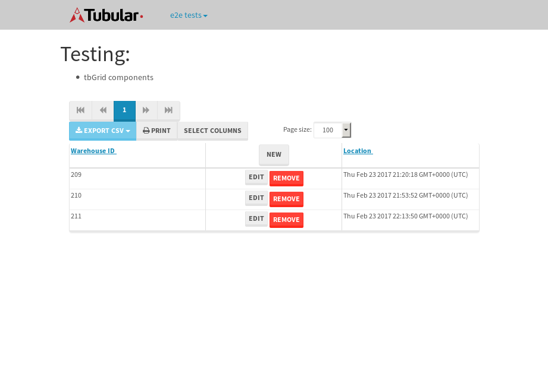

tbColumn.Grid Sorting - 28.712sTests: 5Skipped: 0Failures: 0 should sort data in ascending order then on descending order when sorting by Order Id column - 5.493sTests passed: 100.00%should order data in ascending order when click-sorting an unsorted text column - 5.289sTests passed: 100.00%should order data in descending order when click-sorting an ascending-sorted text column - 5.73sTests passed: 100.00%should order data in ascending order when click-sorting an unsorted date column - 5.978sTests passed: 100.00%should order data in descending order when click-sorting twice an unsorted date column - 6.22sTests passed: 100.00%
tbEmptyForm - 3.414sTests: 3Skipped: 0Failures: 0 should have an empty required field - 0.801sTests passed: 100.00%should not be able to click on save - 0.528sTests passed: 100.00%should load default value for numeric field - 0.557sTests passed: 100.00%
Tubular Filters.tbColumnFilter - 112.096sTests: 12Skipped: 0Failures: 0 should cancel filtering when clicking outside filter-popover - 8.952sTests passed: 100.00%should disable Value text-input for "None" filter - 7.089sTests passed: 100.00%should disable apply button for "None" filter - 6.685sTests passed: 100.00%should decorate popover button when showing data is being filtered for its column - 12.402sTests passed: 100.00%should correctly filter data for the "Equals" filtering option - 8.951sTests passed: 100.00%should correctly filter data for the "Not Equals" filtering option - 8.99sTests passed: 100.00%should correctly filter data for the "Contains" filtering option - 8.995sTests passed: 100.00%should correctly filter data for the "Not Contains" filtering option - 8.807sTests passed: 100.00%should correctly filter data for the "Starts With" filtering option - 7.423sTests passed: 100.00%should correctly filter data for the "Not Starts With" filtering option - 7.155sTests passed: 100.00%should correctly filter data for the "Ends With" filtering option - 7.585sTests passed: 100.00%should correctly filter data for the "Not Ends With" filtering option - 7.66sTests passed: 100.00%
Tubular Filters.tbColumnDateTimeFilter - 137.252sTests: 12Skipped: 0Failures: 0 should cancel filtering when clicking outside filter-popover - 7.204sTests passed: 100.00%should disable Value text-input for "None" filter - 6.685sTests passed: 100.00%should disable apply button for "None" filter - 6.852sTests passed: 100.00%should clear filtering when clicking on Clean button - 18.002sTests passed: 100.00%should decorate popover button when showing data is being filtered for its column - 11.987sTests passed: 100.00%should correctly filter data for the "Equals" filtering option - 7.614sTests passed: 100.00%should correctly filter data for the "Not Equals" filtering option - 7.487sTests passed: 100.00%should correctly filter data for the "Between" filtering option - 12.1sTests passed: 100.00%should correctly filter data for the "Greater-or-equal" filtering option - 12.14sTests passed: 100.00%should corretlly filter data for the "Greater" filtering option - 12.32sTests passed: 100.00%should correctly filter data for the "Less-or-equal" filtering option - 11.947sTests passed: 100.00%should correctly filter data for the "Less" filtering option - 12.116sTests passed: 100.00%
Tubular Filters.tbColumnOptionsFilter - 81.108sTests: 3Skipped: 0Failures: 0 should cancel filtering when clicking outside filter-popover - 8.653sTests passed: 100.00%should decorate popover button when showing data is being filtered for its column - 11.858sTests passed: 100.00%should filter column-elements in accordance to the selected filter when selecting a single option - 49.369sTests passed: 100.00%
Tubular Filters.tbTextSearch - 48.647sTests: 5Skipped: 0Failures: 0 min-chars is not set - 1.03sTests passed: 100.00%should filter data in searchable-column customer name to matching inputted text, starting from 3 characters - 7.028sTests passed: 100.00%should filter data in searchable-column shipper city to matching inputted text, starting from 3 characters - 12.201sTests passed: 100.00%should show clear button when there is inputted text only - 6.489sTests passed: 100.00%should clear filtering when clicking clear button - 16.534sTests passed: 100.00%
tbForm related components.tbCheckboxField - 6.883sTests: 2Skipped: 0Failures: 0 should save changes on "SAVE" - 3.141sTests passed: 100.00%should discard changes on "CANCEL" - 2.368sTests passed: 100.00%
tbForm related components.tbDropDownEditor - 14.682sTests: 5Skipped: 0Failures: 0 should set initial input value to the value of "value" attribute when defined - 3.269sTests passed: 100.00%should show the component name value in a label field when "showLabel" attribute is true - 2.075sTests passed: 100.00%should show a help field equal to this attribute, is present - 1.876sTests passed: 100.00%should submit modifications to item/server when clicking form "Save" - 3.124sTests passed: 100.00%should NOT submit modifications to item/server when clicking form "Cancel" - 3.531sTests passed: 100.00%
tbForm related components.tbTextArea - 18.955sTests: 7Skipped: 0Failures: 0 should set initial input value to the value of "value" attribute when defined - 1.997sTests passed: 100.00%should be invalidated when the number of chars is not in the range of "min" and "max" attributes - 2.437sTests passed: 100.00%should show the component name value in a label field when "showLabel" attribute is true - 2.578sTests passed: 100.00%should show a help field equal to this attribute, is present - 2.084sTests passed: 100.00%should require the field when the attribute "required" is true - 2.326sTests passed: 100.00%should submit modifications to item/server when clicking form "Save" - 3.896sTests passed: 100.00%should NOT submit modifications to item/server when clicking form "Cancel" - 2.485sTests passed: 100.00%
tbForm related components.tbDateEditor - 16.652sTests: 6Skipped: 0Failures: 0 should set initial date value to the value of "value" attribute when defined - 1.934sTests passed: 100.00%should be invalidated when the date is not in the range of "min" and "max" attributes - 3.333sTests passed: 100.00%should show the component name value in a label field when "showLabel" attribute is true - 2.002sTests passed: 100.00%should show a help field equal to this attribute, is present - 1.98sTests passed: 100.00%should submit modifications to item/server when clicking form "Save" - 3.214sTests passed: 100.00%should NOT submit modifications to item/server when clicking form "Cancel" - 3.383sTests passed: 100.00%
tbForm related components.tbTypeaheadEditor - 19.846sTests: 7Skipped: 0Failures: 0 should show an options list when there is an API-info/component entered-data - 2.406sTests passed: 100.00%should select the option clicked - 2.756sTests passed: 100.00%should show a "delete" button when an option/match is selected, and delete the option if button is clicked - 2.895sTests passed: 100.00%should show a label value equal to the component name when "showLabel" attribue is true - 1.943sTests passed: 100.00%should require a value when "require" attribute is true - 2.578sTests passed: 100.00%should submit modifications to item/server when clicking form "Save" - 4.29sTests passed: 100.00%should NOT submit modifications to item/server when clicking form "Cancel" - 2.278sTests passed: 100.00%
tbForm related components.tbSimpleEditor - 26.024sTests: 9Skipped: 0Failures: 0 should set initial input value to the value of "value" attribute when defined - 2.506sTests passed: 100.00%should be invalidated when the number of chars is not in the range of "min" and "max" attributes - 3.126sTests passed: 100.00%should show the component name value in a label field when "showLabel" attribute is true - 1.881sTests passed: 100.00%should set input placeholder to the value of "placeholder" attribute - 2.167sTests passed: 100.00%should validate the control using the "regex" attribute, if present - 3.666sTests passed: 100.00%should show a help field equal to this attribute, is present - 2.576sTests passed: 100.00%should require the field when the attribute "required" is true - 2.444sTests passed: 100.00%should submit modifications to item/server when clicking form "Save" - 4.011sTests passed: 100.00%should NOT submit modifications to item/server when clicking form "Cancel" - 2.884sTests passed: 100.00%
tbForm related components.tbNumericEditor - 19.219sTests: 7Skipped: 0Failures: 0 should set initial component value to the value of "value" attribute when defined - 1.925sTests passed: 100.00%should be invalidated when the entered number is not in the range of "min" and "max" attributes - 2.501sTests passed: 100.00%should show the component name value in a label field when "showLabel" attribute is true - 2.185sTests passed: 100.00%should show a help field equal to this attribute, is present - 2.86sTests passed: 100.00%should require the field when the attribute "required" is true - 2.464sTests passed: 100.00%should submit modifications to item/server when clicking form "Save" - 3.575sTests passed: 100.00%should NOT submit modifications to item/server when clicking form "Cancel" - 2.738sTests passed: 100.00%
tbForm Connection Error NoModelKey - 2.852sTests: 1Skipped: 0Failures: 0 tbForm connection error functionality - 0.561sTests passed: 100.00%
tbForm Connection Error NoServerUrl - 2.574sTests: 1Skipped: 0Failures: 0 tbForm connection error functionality - 0.541sTests passed: 100.00%
tbGridComponents - 13.808sTests: 6Skipped: 0Failures: 1 should add item with newRow method - 2.152sTests passed: 100.00%should add item with newRow method and cancel action - 0.907sTests passed: 100.00%should update item with tbSaveButton - 0.821sFailed: ElementNotVisibleError✗Tests passed: 0.00%should NOT update item on cancel Update action - 1.731sTests passed: 100.00%should remove item with tbRemoveButton - 5.53sTests passed: 100.00%should NOT remove item on cancel Remove action - 1.259sTests passed: 100.00%
tbGridPager.navigation buttons - 10.443sTests: 1Skipped: 0Failures: 0 should perform no action when clicking on the numbered navigation button corresponding to the current-showing results page - 1.485sTests passed: 100.00%
tbGridPager.navigation buttons.first/non-last results page related functionallity - 3.999sTests: 2Skipped: 0Failures: 0 should disable "first" and "previous" navigation buttons when in first results page - 1.643sTests passed: 100.00%should enable "last" and "next" navigation buttons when in a results page other than last - 2.356sTests passed: 100.00%
tbGridPager.navigation buttons.last/non-first results page related functionallity - 4.959sTests: 2Skipped: 0Failures: 0 should disable "last" and "next" navigation buttons when in last results page - 2.25sTests passed: 100.00%should enable "first" and "previous" navigation buttons when in a results page other than first - 2.709sTests passed: 100.00%
tbGridPager.page navigation - 9.144sTests: 5Skipped: 0Failures: 0 should go to next results page when clicking on next navigation button - 2.045sTests passed: 100.00%should go to previous results page when clicking on previous navigation button - 2.072sTests passed: 100.00%should go to last results page when clicking on last navigation button - 1.414sTests passed: 100.00%should go to first results page when clicking on first navigation button - 2.031sTests passed: 100.00%should go to corresponding results page when clicking on a numbered navigation button - 1.582sTests passed: 100.00%
tbGridPagerInfo - 4.576sTests: 2Skipped: 0Failures: 0 should show text in accordance to numbered of filter rows and current results-page - 1.533sTests passed: 100.00%should show count in footer - 0.598sTests passed: 100.00%
tbPageSizeSelctor - 12.9sTests: 4Skipped: 0Failures: 0 should filter up to 10 data rows per page when selecting a page size of "10" - 2.565sTests passed: 100.00%should filter up to 20 data rows per page when selecting a page size of "20" - 1.891sTests passed: 100.00%should filter up to 50 data rows per page when selecting a page size of "50" - 3.412sTests passed: 100.00%should filter up to 100 data rows per page when selecting a page size of "100" - 3.004sTests passed: 100.00%
tbRowSelectable - 12.481sTests: 2Skipped: 0Failures: 0 selected rows - 5.535sTests passed: 100.00%unselected rows - 4.729sTests passed: 100.00%
tbSingleForm - 22.463sTests: 8Skipped: 1Failures: 0 should load correct info - 0.001s***Skipped***Tests passed: 0%should change customer name - 2.513sTests passed: 100.00%should save it - 4.199sTests passed: 100.00%should clear the inputs - 3.623sTests passed: 100.00%should update - 4.039sTests passed: 100.00%should reset editor - 2.757sTests passed: 100.00%should not save if not Changes - 2.79sTests passed: 100.00%should not be able to click on save - 2.54sTests passed: 100.00%
{kind=link}